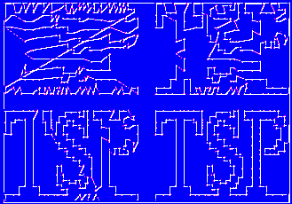

TSPLIB is a library of
sample instances for the TSP (and related problems)
from various sources and of various types.
Instances of the following problem classes are available.
Symmetric traveling salesman problem (TSP)
Given a set of n nodes and distances for each pair of nodes, find a
roundtrip of minimal total length visiting each node exactly once.
The distance from node i to node j is the same as from node
j to node i.
- TSP data
Best known solutions for symmetric TSPs
Hamiltonian cycle problem (HCP)
Given a graph, test if the graph contains a Hamiltonian cycle or not.
- HCP data
Asymmetric traveling salesman problem (ATSP)
Given a set of n nodes and distances for each pair of nodes, find a
roundtrip of minimal total length visiting each node exactly once.
In this case, the distance from node i to node j and the
distance from node j to node i may be different.
- ATSP data
Best known solutions for asymmetric TSPs
Sequential ordering problem (SOP)
This problem is an asymmetric traveling salesman problem with additional
constraints. Given a set of n nodes and distances for each pair of nodes,
find a Hamiltonian path from node 1 to node n of minimal length which
takes given precedence constraints into account. Each precedence constraint
requires that some node i has to be visited before some other node j.
- SOP data
Best known solutions for sequential ordering problems
Capacitated vehicle routing problem (CVRP)
We are given n-1 nodes, one depot and distances from the nodes to
the depot, as well as between nodes. All nodes have demands which
can be satisfied by the depot.
For delivery to the nodes, trucks with identical capacities are
available. The problem is to find tours for the trucks of minimal
total length that satisfy the node demands without violating truck
capacity constraint. The number of trucks is not
specified. Each tour visits a subset of the nodes and starts and
terminates at the depot.
(Remark: In some data files a collection of alternate depots is given.
A CVRP is then given by selecting one of these depots.)
- CVRP data
Remark
Except for the Hamiltonian cycle problems,
all problems instances
are defined on a complete graph and, at present, all distances
are integer numbers.
There is a possibility to require that certain edges appear in
the solution of a problem.
Frequently asked questions
We have a small collection of answers to frequently asked questions
(FAQ).
Mirror sites
TSPLIB is also available at Konrad-Zuse-Zentrum in Berlin:
http://elib.zib-berlin.de/pub/Packages/mp-testdata/tsp/index.html
and at Rice University:
http://nhse.cs.rice.edu/softlib/catalog/tsplib.html
Literature
Pablo Moscate is compiling a
bibliography
of TSP related papers and software.
Address
- Gerhard Reinelt
- Universität Heidelberg
- Institut für Angewandte Mathematik
- Im Neuenheimer Feld 294
- D - 69120 Heidelberg
- Germany
- tel: ++49/6221/54-6171
- fax: ++49/6221/54-5634
- e-mail: Gerhard.Reinelt@IWR.Uni-Heidelberg.de
Last change: February 19, 1997